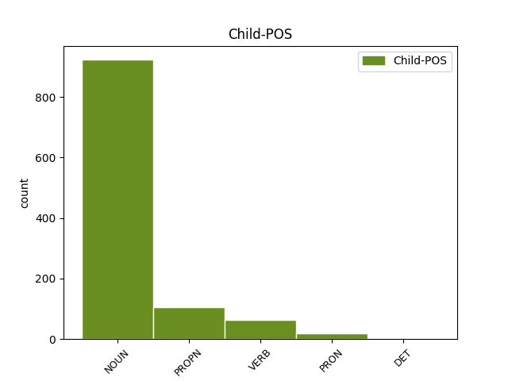

Distribution of features within this leaf

Agreement Rules sorted by frequency.
- When the dependent token is the conjunct(conj) of the head token, and the dependent token is NOUN.
1 Մարզերում _ _ _ _ 0 _ _ _
2 ՀՀԿ _ _ _ _ 0 _ _ _
3 օդիոզ _ _ _ _ 0 _ _ _
4 անդամների _ _ _ _ 0 _ _ _
5 ու _ _ _ _ 0 _ _ _
6 ընդդիմության _ _ _ _ 0 _ _ _
7 պարտությունը _ _ _ _ 0 _ _ _
8 ձեռնտու _ _ _ _ 0 _ _ _
9 կլինի _ _ _ _ 0 _ _ _
10 ինչպես _ _ _ _ 0 _ _ _
11 Կարեն _ _ _ _ 0 _ _ _
12 Կարապետյանի _ _ _ _ 0 _ _ _
13 թիմին թիմ NOUN _ Animacy=Nhum|Case=Dat|Definite=Def|Number=Sing 0 _ _ _
14 , _ _ _ _ 0 _ _ _
15 այնպես _ _ _ _ 0 _ _ _
16 էլ _ _ _ _ 0 _ _ _
17 Սերժ _ _ _ _ 0 _ _ _
18 Սարգսյանի _ _ _ _ 0 _ _ _
19 « _ _ _ _ 0 _ _ _
20 երիտասարդ _ _ _ _ 0 _ _ _
21 տեխնոկրատներին տեխնոկրատ NOUN _ Animacy=Hum|Case=Dat|Definite=Def|Number=Plur 13 conj _ LTranslit=texnokrat|SpaceAfter=No|Translit=texnokratnerin
22 » _ _ _ _ 0 _ _ _
23 : _ _ _ _ 0 _ _ _
1 Զուգահեռ _ _ _ _ 0 _ _ _
2 քաղաքականությունից _ _ _ _ 0 _ _ _
3 դուրս _ _ _ _ 0 _ _ _
4 են _ _ _ _ 0 _ _ _
5 մղվում _ _ _ _ 0 _ _ _
6 այնպիսի _ _ _ _ 0 _ _ _
7 վտանգավոր _ _ _ _ 0 _ _ _
8 մրցակիցներ _ _ _ _ 0 _ _ _
9 , _ _ _ _ 0 _ _ _
10 ինչպիսիք _ _ _ _ 0 _ _ _
11 են _ _ _ _ 0 _ _ _
12 Հովիկ _ _ _ _ 0 _ _ _
13 Աբրահամյանը _ _ _ _ 0 _ _ _
14 , _ _ _ _ 0 _ _ _
15 Մհեր _ _ _ _ 0 _ _ _
16 Սեդրակյանը _ _ _ _ 0 _ _ _
17 , _ _ _ _ 0 _ _ _
18 Սուրիկ Սուրիկ PROPN _ Animacy=Hum|Case=Nom|Definite=Ind|NameType=Giv|Number=Sing 0 _ _ _
19 Խաչատրյանը _ _ _ _ 0 _ _ _
20 , _ _ _ _ 0 _ _ _
21 Գագիկ Գագիկ PROPN _ Animacy=Hum|Case=Nom|Definite=Ind|NameType=Giv|Number=Sing 18 conj _ LTranslit=Gagik|Translit=Gagik
22 Խաչատրյանը _ _ _ _ 0 _ _ _
23 : _ _ _ _ 0 _ _ _
1 - _ _ _ _ 0 _ _ _
2 Հուլիսյան _ _ _ _ 0 _ _ _
3 դեպքերը _ _ _ _ 0 _ _ _
4 շատ _ _ _ _ 0 _ _ _
5 բան _ _ _ _ 0 _ _ _
6 են _ _ _ _ 0 _ _ _
7 փոխել _ _ _ _ 0 _ _ _
8 նրանց _ _ _ _ 0 _ _ _
9 համար _ _ _ _ 0 _ _ _
10 , _ _ _ _ 0 _ _ _
11 ովքեր _ _ _ _ 0 _ _ _
12 ընդունակ _ _ _ _ 0 _ _ _
13 են _ _ _ _ 0 _ _ _
14 մտածելու _ _ _ _ 0 _ _ _
15 , _ _ _ _ 0 _ _ _
16 փոխվելու փոխվել VERB _ Case=Dat|Definite=Ind|Number=Coll|Polarity=Pos|Subcat=Intr|VerbForm=Gdv|Voice=Mid 0 _ _ _
17 և _ _ _ _ 0 _ _ _
18 փոխելու փոխել VERB _ Case=Dat|Definite=Ind|Number=Coll|Polarity=Pos|Subcat=Tran|VerbForm=Gdv|Voice=Act 16 conj _ LTranslit=p’oxel|SpaceAfter=No|Translit=p’oxelow
19 : _ _ _ _ 0 _ _ _
1 Այդ _ _ _ _ 0 _ _ _
2 պատճառով _ _ _ _ 0 _ _ _
3 Մուրակամին _ _ _ _ 0 _ _ _
4 , _ _ _ _ 0 _ _ _
5 Կոելյոն _ _ _ _ 0 _ _ _
6 , _ _ _ _ 0 _ _ _
7 Բեգբեդերը Բեգբեդեր PROPN _ Animacy=Hum|Case=Nom|Definite=Def|NameType=Sur|Number=Sing 0 _ _ _
8 և _ _ _ _ 0 _ _ _
9 մյուսները մյուս PRON _ Case=Nom|Definite=Def|Distance=Dist|Number=Plur|PronType=Dem 7 conj _ LTranslit=myows|Translit=myowsnerë
10 զբաղեցնում _ _ _ _ 0 _ _ _
11 են _ _ _ _ 0 _ _ _
12 նույնիսկ _ _ _ _ 0 _ _ _
13 այլ _ _ _ _ 0 _ _ _
14 հարցերում _ _ _ _ 0 _ _ _
15 առաջադեմ _ _ _ _ 0 _ _ _
16 երիտասարդության _ _ _ _ 0 _ _ _
17 միտքն _ _ _ _ 0 _ _ _
18 ու _ _ _ _ 0 _ _ _
19 հոգին _ _ _ _ 0 _ _ _
20 ։ _ _ _ _ 0 _ _ _
1 Տխրում _ _ _ _ 0 _ _ _
2 ես _ _ _ _ 0 _ _ _
3 , _ _ _ _ 0 _ _ _
4 թախանձագին _ _ _ _ 0 _ _ _
5 նայում _ _ _ _ 0 _ _ _
6 սրա սա PRON _ Case=Gen|Distance=Prox|Number=Sing|PronType=Dem 0 _ _ _
7 - _ _ _ _ 0 _ _ _
8 նրա նա DET _ Case=Gen|Number=Sing|Person=3|Poss=Yes|PronType=Prs 6 conj _ LTranslit=na|Translit=nra
9 աչքերին _ _ _ _ 0 _ _ _
10 , _ _ _ _ 0 _ _ _
11 թե _ _ _ _ 0 _ _ _
12 ` _ _ _ _ 0 _ _ _
13 որսացեք _ _ _ _ 0 _ _ _
14 , _ _ _ _ 0 _ _ _
15 էլի _ _ _ _ 0 _ _ _
16 ՜ _ _ _ _ 0 _ _ _
17 ... _ _ _ _ 0 _ _ _
Disagree Examples:
1 Էն _ _ _ _ 0 _ _ _
2 բլրի _ _ _ _ 0 _ _ _
3 թարս _ _ _ _ 0 _ _ _
4 փեշին փեշ NOUN _ Animacy=Nhum|Case=Dat|Definite=Def|Number=Sing 0 _ _ _
5 ա _ _ _ _ 0 _ _ _
6 , _ _ _ _ 0 _ _ _
7 հանգիստ _ _ _ _ 0 _ _ _
8 գնալով _ _ _ _ 0 _ _ _
9 ` _ _ _ _ 0 _ _ _
10 կես _ _ _ _ 0 _ _ _
11 ժամ ժամ NOUN _ Animacy=Nhum|Case=Nom|Definite=Ind|Number=Sing 4 conj _ LTranslit=žam|SpaceAfter=No|Translit=žam
12 ։ _ _ _ _ 0 _ _ _
1 Թխկ _ _ _ _ 0 _ _ _
2 , _ _ _ _ 0 _ _ _
3 թխկ _ _ _ _ 0 _ _ _
4 ` _ _ _ _ 0 _ _ _
5 թխկացրին _ _ _ _ 0 _ _ _
6 սապոգները _ _ _ _ 0 _ _ _
7 , _ _ _ _ 0 _ _ _
8 թփ _ _ _ _ 0 _ _ _
9 , _ _ _ _ 0 _ _ _
10 թփ _ _ _ _ 0 _ _ _
11 , _ _ _ _ 0 _ _ _
12 թփ _ _ _ _ 0 _ _ _
13 , _ _ _ _ 0 _ _ _
14 թփ _ _ _ _ 0 _ _ _
15 ` _ _ _ _ 0 _ _ _
16 թփթփացրին _ _ _ _ 0 _ _ _
17 թաթերը _ _ _ _ 0 _ _ _
18 ` _ _ _ _ 0 _ _ _
19 արահետից արահետ NOUN _ Animacy=Nhum|Case=Abl|Definite=Ind|Number=Sing 0 _ _ _
20 դուրս _ _ _ _ 0 _ _ _
21 , _ _ _ _ 0 _ _ _
22 թփերի _ _ _ _ 0 _ _ _
23 հետևում հետև NOUN _ Animacy=Nhum|Case=Loc|Definite=Ind|Number=Sing 19 conj _ LTranslit=hetew|SpaceAfter=No|Translit=hetewowm
24 ` _ _ _ _ 0 _ _ _
25 թխկ _ _ _ _ 0 _ _ _
26 - _ _ _ _ 0 _ _ _
27 թխկ _ _ _ _ 0 _ _ _
28 , _ _ _ _ 0 _ _ _
29 թփ _ _ _ _ 0 _ _ _
30 - _ _ _ _ 0 _ _ _
31 թփ _ _ _ _ 0 _ _ _
32 - _ _ _ _ 0 _ _ _
33 թփ _ _ _ _ 0 _ _ _
34 - _ _ _ _ 0 _ _ _
35 թփ _ _ _ _ 0 _ _ _
36 ։ _ _ _ _ 0 _ _ _
1 Իսկ _ _ _ _ 0 _ _ _
2 էդտեղ _ _ _ _ 0 _ _ _
3 ՝ _ _ _ _ 0 _ _ _
4 հենց _ _ _ _ 0 _ _ _
5 փողոցի _ _ _ _ 0 _ _ _
6 մեջտեղում _ _ _ _ 0 _ _ _
7 ( _ _ _ _ 0 _ _ _
8 մի _ _ _ _ 0 _ _ _
9 այլ _ _ _ _ 0 _ _ _
10 տարբերակով _ _ _ _ 0 _ _ _
11 ՝ _ _ _ _ 0 _ _ _
12 պուրակի _ _ _ _ 0 _ _ _
13 ծառերի ծառ NOUN _ Animacy=Nhum|Case=Dat|Definite=Ind|Number=Plur 0 _ _ _
14 տակ _ _ _ _ 0 _ _ _
15 , _ _ _ _ 0 _ _ _
16 երրորդ _ _ _ _ 0 _ _ _
17 տարբերակով _ _ _ _ 0 _ _ _
18 ՝ _ _ _ _ 0 _ _ _
19 իրենց _ _ _ _ 0 _ _ _
20 հսկա _ _ _ _ 0 _ _ _
21 բազմահարկի _ _ _ _ 0 _ _ _
22 ամենամութ _ _ _ _ 0 _ _ _
23 ՝ _ _ _ _ 0 _ _ _
24 հինգերորդ _ _ _ _ 0 _ _ _
25 հարկի _ _ _ _ 0 _ _ _
26 աստիճանահարթակում աստիճանահարթակ NOUN _ Animacy=Nhum|Case=Loc|Definite=Ind|Number=Sing 13 conj _ LTranslit=astič̣anahart’ak|SpaceAfter=No|Translit=astič̣anahart’akowm
27 ) _ _ _ _ 0 _ _ _
28 մի _ _ _ _ 0 _ _ _
29 ոստ _ _ _ _ 0 _ _ _
30 էր _ _ _ _ 0 _ _ _
31 ցցված _ _ _ _ 0 _ _ _
32 ։ _ _ _ _ 0 _ _ _
1 Ակաթի _ _ _ _ 0 _ _ _
2 հայրն _ _ _ _ 0 _ _ _
3 աղջկա _ _ _ _ 0 _ _ _
4 փորը _ _ _ _ 0 _ _ _
5 կլորանալուց _ _ _ _ 0 _ _ _
6 հետո _ _ _ _ 0 _ _ _
7 նրանից _ _ _ _ 0 _ _ _
8 երես _ _ _ _ 0 _ _ _
9 էր _ _ _ _ 0 _ _ _
10 թեքել _ _ _ _ 0 _ _ _
11 , _ _ _ _ 0 _ _ _
12 ոչ _ _ _ _ 0 _ _ _
13 տեսնել _ _ _ _ 0 _ _ _
14 էր _ _ _ _ 0 _ _ _
15 ուզում _ _ _ _ 0 _ _ _
16 , _ _ _ _ 0 _ _ _
17 ոչ _ _ _ _ 0 _ _ _
18 խոսել _ _ _ _ 0 _ _ _
19 , _ _ _ _ 0 _ _ _
20 իսկ _ _ _ _ 0 _ _ _
21 երբ _ _ _ _ 0 _ _ _
22 իմացավ _ _ _ _ 0 _ _ _
23 , _ _ _ _ 0 _ _ _
24 որ _ _ _ _ 0 _ _ _
25 աղջիկ _ _ _ _ 0 _ _ _
26 է _ _ _ _ 0 _ _ _
27 ծնվել _ _ _ _ 0 _ _ _
28 ՝ _ _ _ _ 0 _ _ _
29 « _ _ _ _ 0 _ _ _
30 իրա _ _ _ _ 0 _ _ _
31 նման _ _ _ _ 0 _ _ _
32 լիրբ _ _ _ _ 0 _ _ _
33 պիտի _ _ _ _ 0 _ _ _
34 լինի _ _ _ _ 0 _ _ _
35 , _ _ _ _ 0 _ _ _
36 էլի _ _ _ _ 0 _ _ _
37 » _ _ _ _ 0 _ _ _
38 ասաց _ _ _ _ 0 _ _ _
39 , _ _ _ _ 0 _ _ _
40 ու _ _ _ _ 0 _ _ _
41 կնոջը _ _ _ _ 0 _ _ _
42 պատվիրեց _ _ _ _ 0 _ _ _
43 . _ _ _ _ 0 _ _ _
44 « _ _ _ _ 0 _ _ _
45 Մեր _ _ _ _ 0 _ _ _
46 տուն _ _ _ _ 0 _ _ _
47 էլ _ _ _ _ 0 _ _ _
48 չմտնի _ _ _ _ 0 _ _ _
49 , _ _ _ _ 0 _ _ _
50 բնակարան _ _ _ _ 0 _ _ _
51 վարձիր _ _ _ _ 0 _ _ _
52 , _ _ _ _ 0 _ _ _
53 թող _ _ _ _ 0 _ _ _
54 գնա _ _ _ _ 0 _ _ _
55 իր _ _ _ _ 0 _ _ _
56 համար _ _ _ _ 0 _ _ _
57 ոնց _ _ _ _ 0 _ _ _
58 ուզում _ _ _ _ 0 _ _ _
59 է _ _ _ _ 0 _ _ _
60 ապրի _ _ _ _ 0 _ _ _
61 » _ _ _ _ 0 _ _ _
62 , _ _ _ _ 0 _ _ _
63 — _ _ _ _ 0 _ _ _
64 ասաց _ _ _ _ 0 _ _ _
65 , _ _ _ _ 0 _ _ _
66 իսկ _ _ _ _ 0 _ _ _
67 մտքում _ _ _ _ 0 _ _ _
68 ՝ _ _ _ _ 0 _ _ _
69 « _ _ _ _ 0 _ _ _
70 Կապույտ _ _ _ _ 0 _ _ _
71 աղջիկ աղջիկ NOUN _ Animacy=Hum|Case=Nom|Definite=Ind|Number=Sing 0 _ _ _
72 , _ _ _ _ 0 _ _ _
73 ակաթի ակաթ NOUN _ Animacy=Nhum|Case=Dat|Definite=Ind|Number=Coll 71 conj _ LTranslit=akat’|SpaceAfter=No|Translit=akat’i
74 ... _ _ _ _ 0 _ _ _
75 » _ _ _ _ 0 _ _ _
76 ։ _ _ _ _ 0 _ _ _
1 Ոսկե _ _ _ _ 0 _ _ _
2 , _ _ _ _ 0 _ _ _
3 և _ _ _ _ 0 _ _ _
4 , _ _ _ _ 0 _ _ _
5 ըստ _ _ _ _ 0 _ _ _
6 երևույթին _ _ _ _ 0 _ _ _
7 , _ _ _ _ 0 _ _ _
8 բավական _ _ _ _ 0 _ _ _
9 դեբիլ _ _ _ _ 0 _ _ _
10 ձուկ _ _ _ _ 0 _ _ _
11 , _ _ _ _ 0 _ _ _
12 քանի _ _ _ _ 0 _ _ _
13 որ _ _ _ _ 0 _ _ _
14 կապուտակ _ _ _ _ 0 _ _ _
15 օվկիանոսում _ _ _ _ 0 _ _ _
16 գտնվող _ _ _ _ 0 _ _ _
17 իր _ _ _ _ 0 _ _ _
18 պապենական _ _ _ _ 0 _ _ _
19 պալատը պալատ NOUN _ Animacy=Nhum|Case=Nom|Definite=Def|Number=Sing 0 _ _ _
20 , _ _ _ _ 0 _ _ _
21 իր _ _ _ _ 0 _ _ _
22 ծառաներին ծառա NOUN _ Animacy=Hum|Case=Dat|Definite=Def|Number=Plur 19 conj _ LTranslit=çaṙa|Translit=çaṙanerin
23 ու _ _ _ _ 0 _ _ _
24 իր _ _ _ _ 0 _ _ _
25 արքայավայել _ _ _ _ 0 _ _ _
26 ուտեստները _ _ _ _ 0 _ _ _
27 թողած _ _ _ _ 0 _ _ _
28 ՝ _ _ _ _ 0 _ _ _
29 հոսանքնիվեր _ _ _ _ 0 _ _ _
30 լողալով _ _ _ _ 0 _ _ _
31 հասել _ _ _ _ 0 _ _ _
32 էր _ _ _ _ 0 _ _ _
33 Աղստև _ _ _ _ 0 _ _ _
34 գետը _ _ _ _ 0 _ _ _
35 լցվող _ _ _ _ 0 _ _ _
36 մի _ _ _ _ 0 _ _ _
37 ինչ _ _ _ _ 0 _ _ _
38 որ _ _ _ _ 0 _ _ _
39 անհայտ _ _ _ _ 0 _ _ _
40 առու _ _ _ _ 0 _ _ _
41 ու _ _ _ _ 0 _ _ _
42 էնտեղ _ _ _ _ 0 _ _ _
43 փորձել _ _ _ _ 0 _ _ _
44 համտեսել _ _ _ _ 0 _ _ _
45 էն _ _ _ _ 0 _ _ _
46 գեղցու _ _ _ _ 0 _ _ _
47 կողմից _ _ _ _ 0 _ _ _
48 իր _ _ _ _ 0 _ _ _
49 կարթի _ _ _ _ 0 _ _ _
50 ժանգոտած _ _ _ _ 0 _ _ _
51 կեռին _ _ _ _ 0 _ _ _
52 հագցրած _ _ _ _ 0 _ _ _
53 մի _ _ _ _ 0 _ _ _
54 լղար _ _ _ _ 0 _ _ _
55 անձրևորդի _ _ _ _ 0 _ _ _
56 ։ _ _ _ _ 0 _ _ _